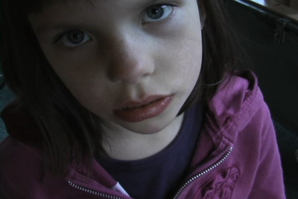

-
I Want the Work to be Useful: An Interview with Dani Leventhal
by James Cole January 17, 2012

Dani Leventhal’s movies try to make sense of the complexities of adult life, from her personal background to her current relationships with friends and family members; from global politics to the inevitability of aging, decay, and death. In videos like Tin Pressed (2011) and Shayne’s Rectangle (2011), Leventhal entwines diary filmmaking, social and political essay filmmaking, and the evolving tradition of devotional cinema laid out by Nathaniel Dorsky in his 2003 book of the same name. Chris Stults has called Leventhal’s work “an effort to reduce the barrier between her and the rest of the world, whether human, animal, or inanimate,” and that rings about as true as anything apart from the films themselves. Leventhal’s videos have played at Union Docs, Light Industry, MoMa PS1, the Brooklyn Museum, the Views From the Avant-Garde and Migrating Forms film festivals, and the Armory Show, as well as the Los Angeles Film Forum, the Rotterdam Film Festival, and the Tel Aviv Center for Contemporary Art. I recently spoke with Leventhal at her home in Brooklyn about her four most recent works — 54 Days this Winter 36 Days this Spring for 18 Minutes (2009), Hearts are Trump Again (2010), Tin Pressed, and Shayne’s Rectangle — and her unique approach to moviemaking.
Q: What’s your background? Where do you come from?
DL: I was born in Columbus, Ohio, 1972. In 1990 I went to Earlham College, a small Quaker school in Indiana. There was really radical thinking going on at the school which really woke me up. After that I took seven years off: I traveled, worked on a kibbutz in Israel, tried to teach English in Hungary, and worked at a clay studio in Santa Fe. Eventually I wound up at the Women’s Studio Workshop, which is a non-profit in Rosendale, New York. I was there for seven years, running the clay program, managing the studio, teaching classes, and organizing fundraisers. Then I went back to school at the University of Illinois in Chicago for sculpture; clay was becoming too heavy and fragile for what I wanted to do so I started working with hide, resin, concrete, and wood. Then I started working with video.
Q: What prompted you to move into video?
DL: I had an accident with a sculpture I was building and broke my hand in three places. The only thing I could do in terms of labor was move the mouse. I had been shooting a lot but not really doing anything but collecting the tapes. I’ve always wanted to document and capture things because I’m sensitive to things disappearing and ending. Eventually I started shooting specifically for videos. Then I went back to school to study video and got an MFA from Bard.
Q: How do you go about collecting footage for your films?
DL: Recently I’ve been shooting intentionally for specific projects. For some projects, like Shayne’s Rectangle, I had shots in mind and I sought them out and I shot them, but that’s not the process for most of my work. Most of the process is collecting what’s in front of me: a lot of shooting, always keeping track of what’s on the tapes so that I know what I have. I’ve got two suitcases full of tapes.
Q: There’s a lot of travel in your film, shots taken from trains and airplanes, shots from all around the world. How do you decide where, and what, to shoot?
DL: When I’m traveling everything is very vivid in my sight. When I travel I want to zoom in, I want to look. I travel a lot; I’m going to Prague and Miami soon. Anytime I’m outside of my neighborhood I want to look at things very carefully. But I want to travel inside my own space, too. There’s a barbershop on my street where I want to shoot. They play salsa music and cut hair until midnight. It’s a community. I’m up here by myself in my studio. It’s great that they’re down there doing that, but I don’t have access to it, because I’m not a Dominican man. But I want to put my camera in there. And that’s totally local, that’s right here. I’ve shot in my deli, right down the street. And I’ve shot in my hallway. I like this building’s hallway a lot, it’s yellow and blue and orange. It’s just about paying attention to what’s immediately there. I think of myself as an observer.
http://vimeo.com/31538238
Q: How do you approach the footage after collecting it? Do you edit with a structure or outline in mind?
DL: I mainly edit by gut, making very personal connections between shots, connections that make perfect sense to me. In Tin Pressed, there’s a shot of a pressed tin ceiling. Only the ceiling is in frame. Below, outside the frame, is my father shuffling papers. The sound of the paper shuffling starts a few shots earlier and leads into the shot of the ceiling. The next shot is a sonogram of a heart. I’m very concerned about my father’s heart, so it’s a very literal connection for me. Things move that way. In Tin Pressed there’s also footage of a mammogram, and there’s meat hanging in a butcher’s window; it’s about the body. In Draft Nine (2003) there’s a clip of my grandmother followed by a clip of a pigeon. I was making a very direct association there about the way elders are treated and the way pigeons are treated. It makes sense to me very literally even though when you watch it, it might not add up. Those associations might not come through for the viewer. Sometimes they’ll come through emotionally; people have a sense of what I’m up to but might not understand what each specific cut is about.
Q: In Tin Pressed, the connections seem more specific than they do in a lot of your work. There are clear references to aging bodies and to decay. There’s also a striking sequence near the end of the video in which a call to prayer is followed by a slow zoom out of a television showing an episode of the Smurfs. In front of the television is a butcher, rocking back and forth slightly while cutting meat. Because of the call to the prayer it looks like he’s bowing to the television.
DL: Yes. And that’s followed by a shot of a drag queen. She’s singing an Israeli nationalist song. I’m trying to juxtapose that call to prayer and this drag queen singing, I’m trying to show how complicated Israel is.
Q: In that way it’s an essay film. I’m interested in how much you consider your films essays. In addition to the documentary elements, which make up the bulk of the footage, there are also parts of your films that are clearly staged. There’s the beating that opens Tin Pressed and a knife attack in 54 Days This Winter 36 Days This Spring for 18 Minutes, where you even include yourself directing the actors.
DL: That’s exactly it. There’s the collecting of what’s in front of me, and then there’s the constructing of scenes out of some kind of need. I wanted to see that violence, so I made that scenario. The knife scene in 54 Days is pathetic. It was an effort to make a narrative moment, but I couldn’t do it. So I showed all the takes instead. I couldn’t really construct the scene like I wanted; I wanted it to look real. Instead, it’s funny.
Q: How does that process relate to other diary films you’ve seen?
DL: I’m not educated enough about diary film. I know a little bit of Sadie Benning’s work; I really like that way of filmmaking. I don’t get tired of seeing other people’s lives. I really like it when someone opens up their world and shares it. Steve Reinke’s work is important to me, I’ve learned a lot from him. He’s kind of doing diary film, except that often there’s no truth to it at all.
Q: In 54 Days, there seems to be a gradual movement from shots of babies and children to older people and a thematic shift from innocence to responsibility. There seem to be a lot of references to aging in your work, a lot of children and the elderly. How does the process of aging figure into your work?
DL: I find animals and children fascinating as a topic. I want to give them the floor and let their voices be heard. I have a lot of respect for them. The elderly are another fascination; they’ve lived entire lives but are still keeping on, even though they’re disabled in a lot of ways. I guess I look at adults as being really confused and fucked up, really destructive. There’s a woman in 54 Days, an addict talking about detox and rehab, having babies and leaving her babies.
Q: There are two prolonged monologues in 54 Days. There’s the woman you mentioned and there’s a sequence in which a shot of a diner’s kitchen is paired with your voice from off-screen. Your monologue is about an internal split. The monologue itself is split in two, which is one of the few times in your work one element gets split up like that. It’s clearly central to the movie.
DL: In the voiceover I was talking about a specific state: emotions being so powerful that you could shit your pants; you literally have no control over your body or emotions. But you also still feel like a very capable and strong person. 54 Days was made with a very rigid structure. I made myself shoot 9 minutes a day for 54 days in the winter, and then 36 days in the spring. All those numbers are tied to 18, which is “Chai” in Hebrew and means life. I was having a really hard time in my life, so I demanded of myself that I continue making work even though everything was very bleak. That monologue was just another one of the days I was shooting. I turned the camera on myself and spoke to it. It’s kind of the anchor to that video.
Q: In Hearts Are Trump Again you include footage of an Ana Mendieta performance that you shot off of a monitor. In 54 Days there’s a lot of rephotography of news footage on television. Why do you include this in your work?
DL: I’m aware that I’m in a safe room with my materials, doing this thing that I love, while in the larger world there’s something really fucked up going on. It’s related to my drawings, which incorporate collage elements. I recently made one that includes a photograph of police during the London riots. I pasted the photograph on and extended it with marks that are purely about form and color. They butt up against each other in acknowledgement that the world is way larger than my little world. Sometimes it arises out of need. For instance, I’ll try to draw an embrace and find that I can’t draw it well enough, so I’ll use a photograph to show the embrace. In 54 Days there’s a segment from 60 Minutes piece about the Apartheid Wall in Israel. I want to address that subject, but I’m not a theorist or historian or political scientist. So I use someone else’s voice: an expert. I want to bring their voice in because their voice has more authority than mine.
Q: At a screening of Shayne’s Rectangle at this year’s Views From the Avant-Garde, you introduced the film, saying you intended for it to heal the viewer. How do you see the work be useful to the viewer?
DL: That’s my total aspiration: I want the work to be useful. The same with the drawings: I want them to function. I want them to function for the viewer, not just for me. Because they do function for me, they heal me. It’s very direct and true; in making a work I’m working things out for myself. Shayne’s Rectangle was made after my sister got sick in the summer; I wanted to make something that would literally heal her. I don’t know if it works for anyone else, but that’s my hope.
http://vimeo.com/31494594
Q: What role do religion and spirituality play in your work? There are a lot of references to prayer throughout your work.
DL: People don’t often acknowledge that’s going on in my work, but it definitely is. It’s a sensitive thing to talk about because people will blow you off if you say you believe in God. I’m a person that prays a lot, but I have big doubts about whether I’m being heard or if I’m just talking to the air. For me it’s tied to that question of use-value and function. Before I set out to make a work I will literally pray to nature, or the universe, or God, whatever you want to call it. I pray that the work will be of use. I don’t want it to be ego driven. By showing the gesture of kneeling in Shayne’s Rectangle I’m trying to put the work in a place of respect. I’m trying to talk to a higher self rather than operate from something that’s instinct-driven, needy, and fucked up.
[All images are courtesy of the artist.]